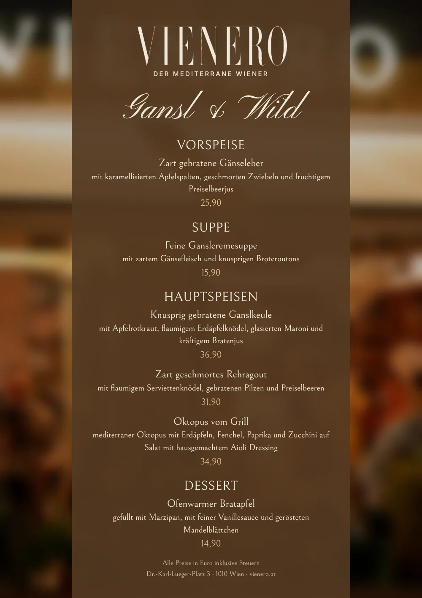

Martinigansl und Wild am Stadtpark
Wenn die Tage kürzer werden, kommt bei uns das Gansl auf den Tisch. Ab 1. November servieren wir im VIENERO unser Herbstmenu: knusprige Ganslkeule mit Rotkraut, Knödel und glasierten Maroni, zart geschmortes Reh, Oktopus vom Grill und als Abschluss ein ofenwarmer Bratapfel.
Gansl und Wild

Alle Preise in Euro inklusive Steuern.
Menu als PDF laden
Gansl essen in der Innenstadt
Ob mit Kollegen zu Mittag, mit der Familie am Wochenende oder als Firmenessen im November: Unser Gansl wird knusprig gebraten und kommt mit allem, was dazugehört. Wer lieber Wild mag, nimmt das Rehragout mit Serviettenknödel und Preiselbeeren, und wer es leichter möchte, den Oktopus vom Grill mit mediterranem Gemüse und hausgemachtem Aioli.
Das VIENERO liegt am Dr.-Karl-Lueger-Platz direkt am Stadtpark, die U3 Station Stubentor ist vor der Tür. Für größere Runden finden Sie alles unter Feiern und Events, für die Adventzeit unter Weihnachtsfeier.
Häufige Fragen
Ab wann gibt es Gansl und Wild im VIENERO?
Ab 1. November servieren wir unser Herbstmenu mit Gansl und Wild, mittags und abends.
Was gibt es bei Gansl und Wild?
Zart gebratene Gänseleber mit karamellisierten Äpfeln, feine Ganslcremesuppe, als Hauptspeise knusprige Ganslkeule mit Apfelrotkraut, Erdäpfelknödel und Maroni geschmortes Rehragout mit Serviettenknödel oder Oktopus vom Grill mit Erdäpfeln, Fenchel und Aioli, und zum Abschluss ein ofenwarmer Bratapfel mit Marzipan und Vanillesauce.
Was kostet die Ganslkeule?
Die knusprig gebratene Ganslkeule kostet 36,90 Euro, die Ganslcremesuppe 15,90 Euro und die Gänseleber 25,90 Euro. Alle Gerichte bestellen Sie einzeln, ganz nach Lust, neben unserem normalen Menu.
Wie reserviere ich?
Online über unsere Reservierungsseite, per E-Mail an Reservierung@vienero.at oder telefonisch unter 01 913 70 05. Für Gruppen und Firmenessen empfehlen wir, früh zu reservieren.
Besuch
Öffnungszeiten
Mo bis Sa 12:00 bis 24:00
So 17:00 bis 24:00
Küche bis 22:00, Bar bis 24:00
Adresse
Dr.-Karl-Lueger-Platz 3
1010 Wien, am Stadtpark
U3 Stubentor vor der Tür
Google Maps